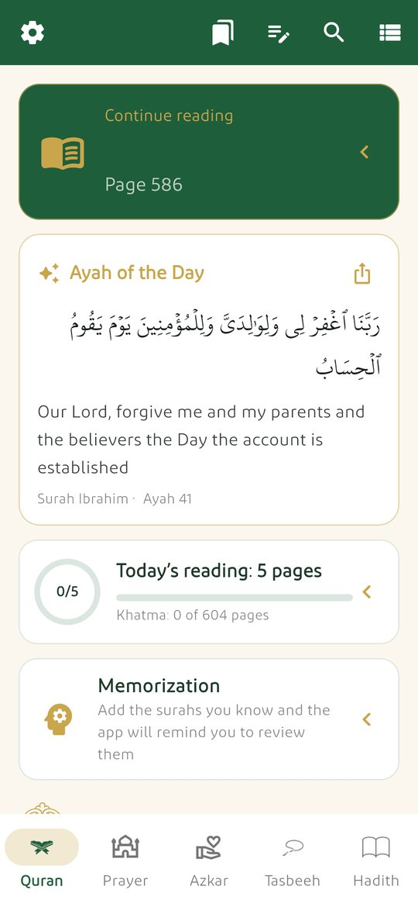
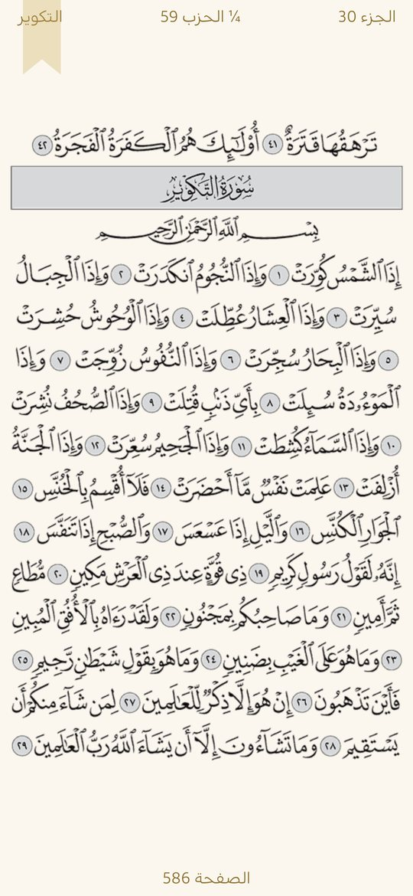
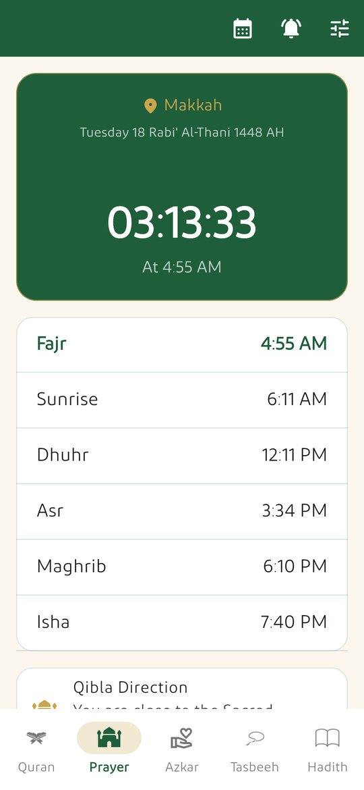

The Quran, prayer times and daily remembrance in one free app
Manhaj Hayah («Way of Life») is a free Android app for reading the Quran, keeping prayer times and remembering Allah every day. It has no ads, no tracking and needs no account, and most of it works offline.
Android 7.0+ APK · free · no ads

See the app




The complete Madinah Mushaf
- 604 pages with the surah, juz and hizb index, last-page memory, bookmarks, pinch-to-zoom and a night mode.
- Long-press any ayah to open its tafsir, listen from it, add a reflection note, repeat a passage for memorisation, share it as an image or copy it.
- Read any page as text in Uthmanic script with the font size you choose.
- Search by word, part of an ayah or surah name, including English words in the translation.
Tafsir, translation and recitation
- Tafsir al-Muyassar for every ayah; Al-Sa'di, Al-Mukhtasar, Ibn Kathir and Al-Qurtubi download on demand and then work offline.
- English translation of the meanings (Saheeh International) and, on demand, Urdu, Indonesian, Turkish, French, Bengali, Russian, Spanish, Chinese and Swedish.
- Listen ayah by ayah to well-known reciters, repeat a passage, use a sleep timer and download surahs to listen offline. Streaming and downloading need internet.
Prayer, qibla and calendar
- Prayer times calculated on your phone with no internet, from your location or a city list, with a countdown to the next prayer.
- Choose the calculation method and the Asr school; adhan sound of your choice with reminders at the start of each prayer.
- Qibla compass using your phone's sensors, and a home-screen widget showing the next prayer.
- Hijri calendar (Umm al-Qura, adjustable by up to two days), virtuous days, and a full Ramadan timetable with iftar and suhoor countdowns.
Azkar, tasbeeh and hadith
- Morning, evening, after-prayer and sleep azkar from Hisn al-Muslim, with a counter for each and reminders.
- Supplications for occasions, digital tasbeeh with statistics and volume-key counting, and hadith collections: Forty Nawawi, Forty Qudsi and Riyad as-Salihin.
- Daily wird and khatma tracking, memorisation review at spaced intervals, and group khatma through any messaging app with no account.
Install on your phone
- Download the file with the button above, from your phone.
- Open it from the download notification or your Files app.
- If Android asks, allow installing from this source once.
- Google Play Protect may warn because the app is installed from outside the store. If you trust this website, choose More details and then Install anyway.
- Open the app, choose your city and start reading.
You can verify the file before installing: compare its SHA-256 fingerprint with the one below.
File fingerprint
SHA-256 of :
Updates install over your current version and keep your data (from version 1.0.80).
Frequently asked questions
Is Manhaj Hayah free?
Yes. It is completely free, with no ads, no in-app purchases and no account.
Does it work offline?
Yes. The Mushaf, Tafsir al-Muyassar, search, prayer times, azkar and hadith work without internet. Internet is only needed to listen to or download recitations, extra tafsirs and translations.
Which devices does it support?
Android 7.0 and newer. There is no iPhone version at the moment.
What data does the app collect?
None. There is no account, no analytics and no ads. Your bookmarks, progress and settings stay on your phone, and your approximate location, if you allow it, is used on the phone only to calculate prayer times and the qibla.
Is the interface available in English?
Yes. You can switch between Arabic and English from the settings. The Quran, hadith and azkar always stay in Arabic, and the English translation of the Quran's meanings is available alongside them.
Where do the texts come from?
The Quran text used for search is from quranenc.com, the tafsirs from quran.com and the tafsir_api project, the hadith from sunnah.com and the azkar from Hisn al-Muslim, all used as they are without changes to the wording.